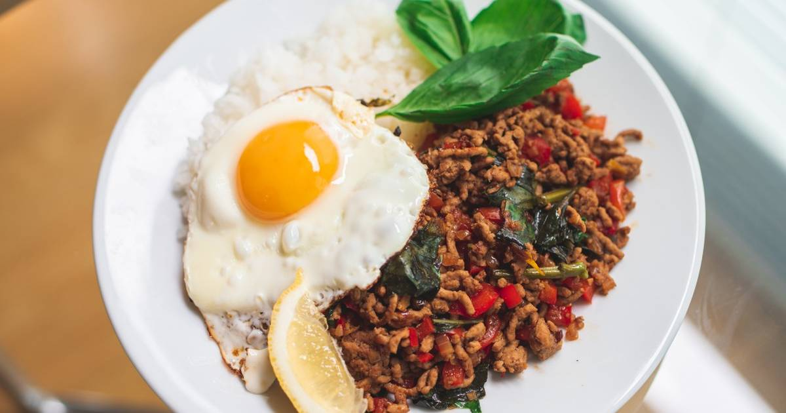

Ga Pao Rice

Description
This is a traditional Thai dish that makes use of savory and slightly sweet flavors to bring out a refreshing taste. Can be served with rice or salad and topped with an egg.
This recipe is meant for a single serving but can be easily adjusted to accomadate multiple servings for families or parties.
Ingredients
- 200g minced chicken
- 1/4 bell pepper
- 1/2 onion
- 10 basil leaves
- 1 garlic clove
- 1 tbsp vegetable oil
- 1/2 tsp grated gingeer
- 1/2 tsp Chinese chili bean sauce
- 1 tbsp sesame oil
- cooked rice
- 2 eggs
- salt
- pepper
- Sesoning liquid
- 1/2 tsp sugar
- 1 tbsp fish sauce
- 1 tsp oyster sauce
- 1/2 tsp Chinese chicken stock
Steps
- Finely chop the onion and garlic. Dice the bell peppers.
- In a frying pan, fry 1 tbsp sesame oil, garlic, and Chinese chili bean sauce
- When fragrant, add the onions and fry.When the onions are slightly cooked, add the minced meat.When teh minced meat is almost cooked, add the bell pappers and stir-fry
- When the paprika is almost cooked, add the seasoning and fry lightly, turn off the heat and add the torn basil leaves. Season with salt and pepper.
- Arrange the cooked rice and the contents of the pan on a plate.
- Fry the fried egg in teh pan in which you were frying the meat, place it on the plate and sprinkle a little pepper on top! Serve hot!!!!!